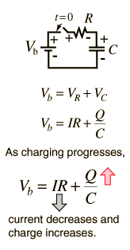

Capacitor Charging Equation
|  |
The transient behavior of a circuit with a battery, a resistor and a capacitor is governed by Ohm's law, the voltage law and the definition of capacitance. Development of the capacitor charging relationship requires calculus methods and involves a differential equation. For continuously varying charge the current is defined by a derivative This kind of differential equation has a general solution of the form:  and the detailed solution is formed by substitution of the general solution and forcing it to fit the boundary conditions of this problem. The result is |
| Charging capacitor | Capacitor discharge |
DC Circuits
Capacitor Concepts
| HyperPhysics***** Electricity and Magnetism | R Nave |